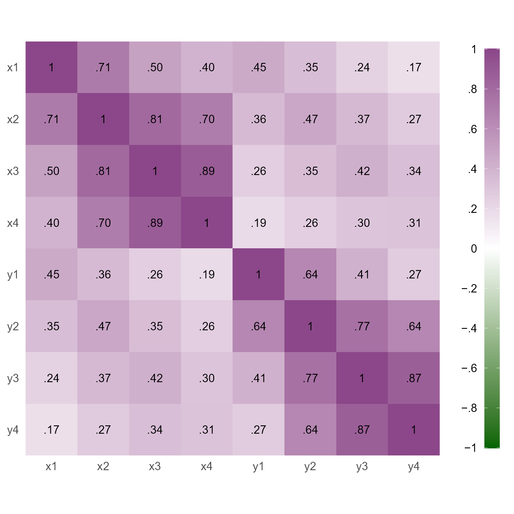
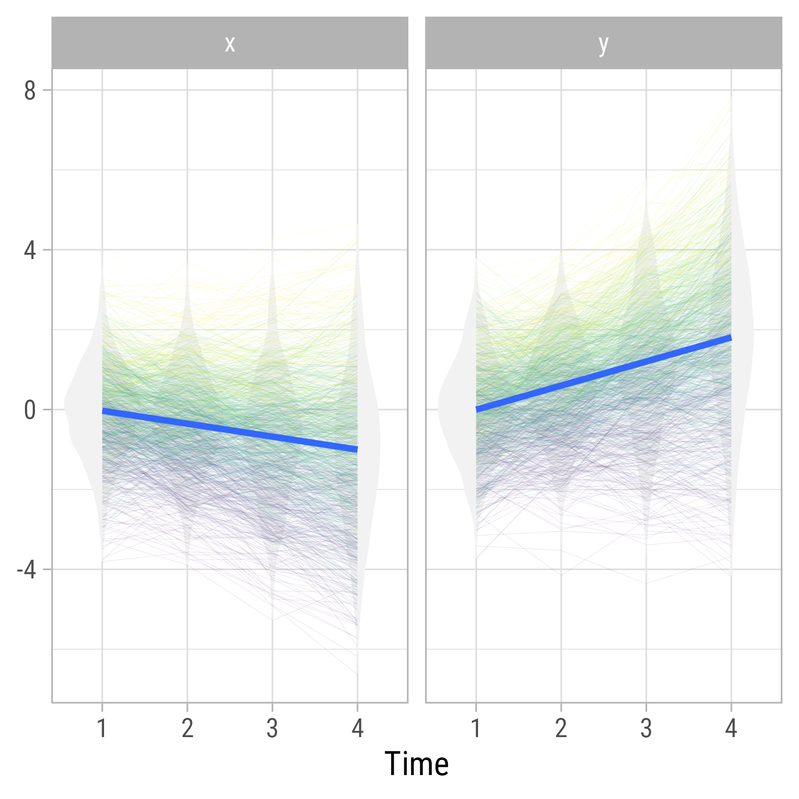

m <- '
# Covariances
x1 ~~ tau_x1 * x1
y1 ~~ tau_y1 * y1 + tau_x1y1 * x1
x2 ~~ tau_xx * x2 + tau_xy * y2
x3 ~~ tau_xx * x3 + tau_xy * y3
x4 ~~ tau_xx * x4 + tau_xy * y4
y2 ~~ tau_yy * y2
y3 ~~ tau_yy * y3
y4 ~~ tau_yy * y4
# Regressions with intercepts
x1 ~ b_x01 * 1
x2 ~ b_x02 * 1 + b_xx * x1 + b_yx * y1
x3 ~ b_x03 * 1 + b_xx * x2 + b_yx * y2
x4 ~ b_x04 * 1 + b_xx * x3 + b_yx * y3
y1 ~ b_y01 * 1
y2 ~ b_y02 * 1 + b_yy * y1 + b_xy * x1
y3 ~ b_y03 * 1 + b_yy * y2 + b_xy * x2
y4 ~ b_y04 * 1 + b_yy * y3 + b_xy * x3
'To investigate causal relations, experiments with manipulated variables are the most straightforward and persuasive forms of evidence we have. Unfortunately, there are a lot of interesting variables that are hard to manipulate experimentally. To investigate what they cause and what causes such variables, longitudinal studies are among the most useful forms of evidence we have.
For example, reading comprehension and vocabulary have a reciprocally causal relationship (Killingly et al., 2025; Quinn et al., 2015). That is, if you have a good vocabulary, it is easier for you to comprehend text. If it is easy for you to comprehend text, you will likely expand your vocabulary.
Killingly, C., Graham, L. J., Tancredi, H., & Snow, P. (2025). Reciprocal relationships among reading and vocabulary over time: A longitudinal study from grade 1 to 5. Reading and Writing, 38(3), 605–625. https://doi.org/10.1007/s11145-024-10522-x
Quinn, J. M., Wagner, R. K., Petscher, Y., & Lopez, D. (2015). Developmental relations between vocabulary knowledge and reading comprehension: A latent change score modeling study. Child Development, 86(1), 159–175. https://doi.org/10.1111/cdev.12292
Unfortunately, many of our initial methods of understanding longitudinal relationships can generate misleading findings.
Cross-Lag Panel Models (CLPM)
One intuitively simple model is the cross-lagged panel model, as shown with four time periods in Figure 1. The cross-lag panel model has two series of variables, X and Y. The paths within each series (X1 to X2 to X3 to X4 and Y1 to Y2 to Y3 to Y4) are called auto-regressive paths, meaning that each variable is predicting itself across time.
Each variable also influences the other at a subsequent time. These paths crossing from one series to the other are called cross lags.
In addition to the cross lags and autoregressive paths, the series have correlated errors, which allow variables measured at the same time to have additional reasons to correlate.
Code
my_observed <- redefault(ob_ellipse, m1 = 15)
my_connect <- redefault(connect, resect = 2)
my_error <- redefault(ob_circle, radius = .35)
my_font <- "Roboto Condensed"
k <- 4
my_sep <- 4
ggdiagram(font_family = my_font, font_size = 24) +
{x <- my_observed() %>%
ob_array(k, sep = my_sep,
where = "south",
label = paste0("*X*~" , 1:k, "~"))} +
{y <- my_observed(label = paste0("*Y*~" ,1:k, "~")) %>%
place(x, "right", sep = my_sep)} +
{e_x <- my_error() %>% place(x[-1], "right", sep = .6)} +
{e_y <- my_error() %>% place(y[-1], "left", sep = .6)} +
my_connect(x[-k], x[-1],
label = ob_label("*b*~*XX*~",
angle = 0,
size = 12)) +
my_connect(x[-k], y[-1],
label = ob_label("*b*~*XY*~",
angle = 0,
size = 12, position = .27)) +
my_connect(y[-k], x[-1],
label = ob_label("*b*~*YX*~",
angle = 0,
size = 12, position = .27)) +
my_connect(y[-k], y[-1],
label = ob_label("*b*~*YY*~",
angle = 0,
size = 12)) +
my_connect(e_x, x[-1], length_head = 5, resect = 1) +
my_connect(e_y, y[-1], length_head = 5, resect = 1) +
{tau_x1y1 <- ob_covariance(x[1], y[1])} +
ob_latex("\\tau_{X_1Y_1}", tau_x1y1@midpoint(), width = 1.35, delete_files = F, force_recompile = F) +
{tau_xy <- ob_covariance(e_y, e_x,
resect = 1,
length_head = 4,
length_fins = 4,
looseness = 1.3)} +
ob_latex("\\tau_{xy}", tau_xy@midpoint(), width = .95, delete_files = F, force_recompile = T) +
{tau_x2 <- ob_variance(x[1],
length_head = 5,
length_fins = 5,
resect = 1,
bend = -10,
theta = degree(65),
looseness = 1.1)} +
ob_latex("\\tau^2_{X_1}", tau_x2@midpoint(), width = .85, delete_files = F, force_recompile = F) +
{tau_y2 <- ob_variance(y[1],
length_head = 5,
length_fins = 5,
resect = 1,
bend = degree(-10),
theta = degree(65),
looseness = 1.1)} +
ob_latex("\\tau^2_{Y_1}", tau_y2@midpoint(), width = .85, delete_files = F, force_recompile = F) +
{tau_ex2 <- ob_variance(e_x,
length_head = 5,
length_fins = 5,
resect = 1,
# bend = degree(-90),
theta = degree(90),
looseness = 3.5)} +
ob_latex("\\tau^2_{X}", tau_ex2@midpoint(), width = .75, force_recompile = F, delete_files = F) +
{tau_ey2 <- ob_variance(e_y,
length_head = 5,
length_fins = 5,
resect = 1,
# bend = degree(-90),
theta = degree(90),
looseness = 3.5)} +
ob_latex("\\tau^2_{Y}", tau_ey2@midpoint(), width = .75, delete_files = F, force_recompile = F) Automating repetitive lavaan models
Unfortunately, lavaan models can become quite large. In most lavaan models, we do not need to name the parameters. However, if we are specifying parameters are constrained to equal each other, we need to name our parameters. Any parameter with the same name is constrained to be equal.
To specify the model with lavaan syntax, one could do it by hand like so:
The benefits of this approach are that the code is easier to create and to understand. With only 4 waves of data, this model does not seem so difficult to specify by hand.
The liabilities of this approach are that it is error prone and increasingly tedious for large models. We are better off using paste0 or glue from the glue package to automate model production.
Pasting text together with paste0
The paste0 function is a special variant of the paste function that has 0 separation between the pasted elements. By default, paste separates the elements with spaces:
paste("A", "B", "C")[1] "A B C"You can put anything between the elements with the sep parameter:
paste("A", "B", "C", sep = ",")[1] "A,B,C"The paste0 function pastes text together. For example,
paste0("A", "B", "C")[1] "ABC"If you use a vector, paste0 will paste multiple strings:
paste0("A", 1:3)[1] "A1" "A2" "A3"We can “collapse” the vector strings into a single string separated by the newline symbol \n:
paste0("A", 1:3, collapse = "\n") %>%
cat()A1
A2
A3Pasting repetitive code
Suppose we have 8 waves of data. We need to set the variances of the x series.
This is what we need:
x1 ~~ tau_x1 * x1
x2 ~~ tau_xx * x2
x3 ~~ tau_xx * x3
x4 ~~ tau_xx * x4
x5 ~~ tau_xx * x5
x6 ~~ tau_xx * x6
x7 ~~ tau_xx * x7
x8 ~~ tau_xx * x8
We see that each line is very similar. We need to create vectors for the parts that change: the numbers 1 to 8 and the variance parameters (tau_x1 and tau_xx). The numbers 1 to 8 are easy to make with the : operator.
1:8[1] 1 2 3 4 5 6 7 8Alternately, we could use the seq function to make a sequence:
seq(1, 8)[1] 1 2 3 4 5 6 7 8However, we do not want our code to be tied specifically to the number 8. We want any number of waves. We define a variable k for the number of waves and make a sequence
k <- 8
1:k[1] 1 2 3 4 5 6 7 8# or
seq(1, k)[1] 1 2 3 4 5 6 7 8# or omit the start value
seq(k)[1] 1 2 3 4 5 6 7 8The variance parameters are all the same except for x1. So we need a vector that is one value for the first element and repeated k - 1 times for the remaining elements. The rep function repeats elements as many times as you specify:
rep("tau_xx", k - 1)[1] "tau_xx" "tau_xx" "tau_xx" "tau_xx" "tau_xx" "tau_xx" "tau_xx"Putting the first and remaining elements together:
v_x <- c("tau_x1", rep("tau_xx", k - 1))
v_x[1] "tau_x1" "tau_xx" "tau_xx" "tau_xx" "tau_xx" "tau_xx" "tau_xx" "tau_xx"Now we are ready to paste the entire line of code:
# Make string
var_x <- paste0("x", 1:k, " ~~ ", v_x, " * x", 1:k, collapse = "\n")
# Output string
cat(var_x)x1 ~~ tau_x1 * x1
x2 ~~ tau_xx * x2
x3 ~~ tau_xx * x3
x4 ~~ tau_xx * x4
x5 ~~ tau_xx * x5
x6 ~~ tau_xx * x6
x7 ~~ tau_xx * x7
x8 ~~ tau_xx * x8The glue function: An alternative to paste0
Many people find the glue function from the glue package easier to read than the paste0 function. Put everything inside a single string, with R code enclosed in curly braces:
library(glue)
var_x <- glue("x{1:k} ~~ {v_x} * x{1:k}")The glue_collapse function is useful to see the output of glue as one string:
glue_collapse(var_x, sep = "\n")x1 ~~ tau_x1 * x1
x2 ~~ tau_xx * x2
x3 ~~ tau_xx * x3
x4 ~~ tau_xx * x4
x5 ~~ tau_xx * x5
x6 ~~ tau_xx * x6
x7 ~~ tau_xx * x7
x8 ~~ tau_xx * x8Specifying the CLPM Model
To specify Figure 1 with automated lavaan syntax
library(glue)
# Number of waves
k <- 4
# Sequence from 2 to k
s2k <- seq(2, k)
# Sequence from 1 to k - 1
s1k1 <- seq(1, k - 1)
# variance symbols for x
v_x <- c("tau_x1", rep("tau_xx", k - 1))
# variance symbols for y
v_y <- c("tau_y1", rep("tau_yy", k - 1))
# covariance symbols xy
cov_xy <- c("tau_x1y1", rep("tau_xy", k - 1))
# Model with comments added
m_clpm <- c(
"# Regressions",
glue("x{s2k} ~ b_xx * x{s1k1} + b_yx * y{s1k1}"),
glue("y{s2k} ~ b_yy * y{s1k1} + b_xy * x{s1k1}") ,
"# Variances",
glue("x{1:k} ~~ {v_x} * x{1:k}"),
glue("y{1:k} ~~ {v_y} * y{1:k}"),
"# Covariances",
glue("x{1:k} ~~ {cov_xy} * y{1:k}"),
"# Intercepts",
glue("x{1:k} ~ b_x0{1:k} * 1"),
glue("y{1:k} ~ b_y0{1:k} * 1")
) %>%
glue_collapse("\n")
m_clpm# Regressions
x2 ~ b_xx * x1 + b_yx * y1
x3 ~ b_xx * x2 + b_yx * y2
x4 ~ b_xx * x3 + b_yx * y3
y2 ~ b_yy * y1 + b_xy * x1
y3 ~ b_yy * y2 + b_xy * x2
y4 ~ b_yy * y3 + b_xy * x3
# Variances
x1 ~~ tau_x1 * x1
x2 ~~ tau_xx * x2
x3 ~~ tau_xx * x3
x4 ~~ tau_xx * x4
y1 ~~ tau_y1 * y1
y2 ~~ tau_yy * y2
y3 ~~ tau_yy * y3
y4 ~~ tau_yy * y4
# Covariances
x1 ~~ tau_x1y1 * y1
x2 ~~ tau_xy * y2
x3 ~~ tau_xy * y3
x4 ~~ tau_xy * y4
# Intercepts
x1 ~ b_x01 * 1
x2 ~ b_x02 * 1
x3 ~ b_x03 * 1
x4 ~ b_x04 * 1
y1 ~ b_y01 * 1
y2 ~ b_y02 * 1
y3 ~ b_y03 * 1
y4 ~ b_y04 * 1Simulating data based on the CLPM
To simulate data, we need to replace the parameter labels in the model with specific values. Doing so by hand is no fun, and it is easy to mess things up when playing with different values. I recommend placing parameter labels programmatically with a named vector and a custom function.
Here is a named vector of parameter values:
my_parameters <- c(
tau_xx = .4,
tau_yy = .5,
tau_x1y1 = .4,
tau_xy = .2,
tau_x1 = 1,
tau_y1 = 1,
b_xx = .7,
b_yy = .6,
b_xy = 0,
b_yx = 0.3
) I have made a custom function replace_parametersto replace parameter labels. I have also made a custom function plot_cor to plot correlation matrices.
replace_parameters <- function(model, params) {
# Make sure replacements are whole words
names(params) <- paste0("\\b", names(params), "\\b")
# Convert to strings but retain names
p <- purrr::map_chr(params, as.character)
# replace all strings
stringr::str_replace_all(model, p)
}
plot_cor <- function(d, font_size = 16) {
cor(d) %>%
corrr::as_cordf(1) %>%
corrr::stretch() %>%
mutate(y = fct_rev(y)) %>%
ggplot(aes(x, y)) +
geom_tile(aes(fill = r)) +
geom_text(aes(label = ggdiagram::round_probability(r)),
size = font_size * .8,
size.unit = "pt") +
scale_fill_gradient2(NULL,
limits = c(-1, 1),
low = "darkgreen",
mid = "white",
high = "orchid4",
breaks = seq(-1, 1, .2),
labels = \(x) ggdiagram::round_probability(x, digits = 1)
) +
scale_x_discrete(NULL, expand = expansion()) +
scale_y_discrete(NULL, expand = expansion()) +
coord_fixed() +
theme_minimal(base_size = font_size) +
theme(legend.key.height = unit(1, "null"),
legend.text = element_text(hjust = 1),
legend.text.position = "left")
}Let’s make a model to simulate values:
m_clpm_sim <- m_clpm %>%
replace_parameters(my_parameters) %>%
glue_collapse("\n")
m_clpm_sim# Regressions
x2 ~ 0.7 * x1 + 0.3 * y1
x3 ~ 0.7 * x2 + 0.3 * y2
x4 ~ 0.7 * x3 + 0.3 * y3
y2 ~ 0.6 * y1 + 0 * x1
y3 ~ 0.6 * y2 + 0 * x2
y4 ~ 0.6 * y3 + 0 * x3
# Variances
x1 ~~ 1 * x1
x2 ~~ 0.4 * x2
x3 ~~ 0.4 * x3
x4 ~~ 0.4 * x4
y1 ~~ 1 * y1
y2 ~~ 0.5 * y2
y3 ~~ 0.5 * y3
y4 ~~ 0.5 * y4
# Covariances
x1 ~~ 0.4 * y1
x2 ~~ 0.2 * y2
x3 ~~ 0.2 * y3
x4 ~~ 0.2 * y4
# Intercepts
x1 ~ b_x01 * 1
x2 ~ b_x02 * 1
x3 ~ b_x03 * 1
x4 ~ b_x04 * 1
y1 ~ b_y01 * 1
y2 ~ b_y02 * 1
y3 ~ b_y03 * 1
y4 ~ b_y04 * 1Let’s make data that conforms to this model:
d_clpm <- simulateData(model = m_clpm_sim, sample.nobs = 1000)
head(d_clpm) x2 x3 x4 y2 y3 y4 x1
1 0.1216537 -0.2619177 0.1367773 0.5668824 1.4040416 0.1222878 -0.1743599
2 -0.8586605 -1.2073190 -1.9587255 -1.4891127 -0.7730368 -1.8336580 0.6147530
3 1.1973754 1.6207579 2.4214323 0.9126255 0.6491281 0.7660641 0.3416975
4 -0.3381759 -0.5865429 -0.2810832 -0.6039896 -1.0346298 -0.4615432 -0.3066060
5 0.9128507 0.6352567 1.3006448 0.5790674 0.7791130 0.1838290 0.4109004
6 -1.5623715 -2.1726694 -1.8069801 0.4013958 -0.2789933 -0.5074396 -0.6631663
y1
1 -0.03351154
2 -0.12960376
3 -0.28229122
4 -1.10591473
5 0.77335220
6 0.02972531Figure 2 displays the correlations among the variables we have simulated. Notice that adjacent variables are more highly correlated than variables separated by time.
plot_cor(d_clpm)If we test the free-parameter model on the simulated data, we can see that the estimates are close to the specified population parameters, which increases our confidence that the simulation is correct.
fit_clpm <- sem(model = m_clpm, data = d_clpm)
my_metrics <- c("Chi2", "Chi2_df", "p_Chi2", "RMSEA", "GFI", "NNFI")
model_performance(fit_clpm, metrics = my_metrics) %>%
print_md()| Chi2(26) | p (Chi2) | RMSEA | GFI | NNFI |
|---|---|---|---|---|
| 21.97 | 0.690 | 0.00 | 0.99 | 1.00 |
Indices of model performance
model_parameters(fit_clpm, component = "all") %>%
print_md()| Link | Coefficient | SE | 95% CI | z | p |
|---|---|---|---|---|---|
| x2 ~ x1 (b_xx) | 0.70 | 0.01 | (0.67, 0.72) | 55.07 | < .001 |
| x2 ~ y1 (b_yx) | 0.29 | 0.01 | (0.26, 0.32) | 19.73 | < .001 |
| x3 ~ x2 (b_xx) | 0.70 | 0.01 | (0.67, 0.72) | 55.07 | < .001 |
| x3 ~ y2 (b_yx) | 0.29 | 0.01 | (0.26, 0.32) | 19.73 | < .001 |
| x4 ~ x3 (b_xx) | 0.70 | 0.01 | (0.67, 0.72) | 55.07 | < .001 |
| x4 ~ y3 (b_yx) | 0.29 | 0.01 | (0.26, 0.32) | 19.73 | < .001 |
| y2 ~ y1 (b_yy) | 0.61 | 0.02 | (0.57, 0.64) | 37.46 | < .001 |
| y2 ~ x1 (b_xy) | -0.01 | 0.01 | (-0.04, 0.02) | -0.86 | 0.388 |
| y3 ~ y2 (b_yy) | 0.61 | 0.02 | (0.57, 0.64) | 37.46 | < .001 |
| y3 ~ x2 (b_xy) | -0.01 | 0.01 | (-0.04, 0.02) | -0.86 | 0.388 |
| y4 ~ y3 (b_yy) | 0.61 | 0.02 | (0.57, 0.64) | 37.46 | < .001 |
| y4 ~ x3 (b_xy) | -0.01 | 0.01 | (-0.04, 0.02) | -0.86 | 0.388 |
# Regression
| Link | Coefficient | SE | 95% CI | z | p |
|---|---|---|---|---|---|
| x1 ~~ x1 (tau_x1) | 1.04 | 0.05 | (0.95, 1.13) | 22.36 | < .001 |
| x2 ~~ x2 (tau_xx) | 0.41 | 0.01 | (0.39, 0.43) | 38.73 | < .001 |
| x3 ~~ x3 (tau_xx) | 0.41 | 0.01 | (0.39, 0.43) | 38.73 | < .001 |
| x4 ~~ x4 (tau_xx) | 0.41 | 0.01 | (0.39, 0.43) | 38.73 | < .001 |
| y1 ~~ y1 (tau_y1) | 0.95 | 0.04 | (0.87, 1.03) | 22.36 | < .001 |
| y2 ~~ y2 (tau_yy) | 0.51 | 0.01 | (0.48, 0.54) | 38.73 | < .001 |
| y3 ~~ y3 (tau_yy) | 0.51 | 0.01 | (0.48, 0.54) | 38.73 | < .001 |
| y4 ~~ y4 (tau_yy) | 0.51 | 0.01 | (0.48, 0.54) | 38.73 | < .001 |
| Link | Coefficient | SE | 95% CI | z | p |
|---|---|---|---|---|---|
| x1 ~~ y1 (tau_x1y1) | 0.43 | 0.03 | (0.36, 0.49) | 12.46 | < .001 |
| x2 ~~ y2 (tau_xy) | 0.20 | 9.13e-03 | (0.18, 0.22) | 21.97 | < .001 |
| x3 ~~ y3 (tau_xy) | 0.20 | 9.13e-03 | (0.18, 0.22) | 21.97 | < .001 |
| x4 ~~ y4 (tau_xy) | 0.20 | 9.13e-03 | (0.18, 0.22) | 21.97 | < .001 |
| Link | Coefficient | SE | 95% CI | z | p |
|---|---|---|---|---|---|
| x1 ~1 (b_x01) | 0.05 | 0.03 | (-0.02, 0.11) | 1.43 | 0.152 |
| x2 ~1 (b_x02) | 2.22e-03 | 0.02 | (-0.04, 0.04) | 0.11 | 0.913 |
| x3 ~1 (b_x03) | -0.03 | 0.02 | (-0.07, 9.60e-03) | -1.49 | 0.137 |
| x4 ~1 (b_x04) | -9.16e-04 | 0.02 | (-0.04, 0.04) | -0.05 | 0.964 |
| y1 ~1 (b_y01) | 0.03 | 0.03 | (-0.03, 0.09) | 0.91 | 0.361 |
| y2 ~1 (b_y02) | 0.01 | 0.02 | (-0.03, 0.06) | 0.52 | 0.604 |
| y3 ~1 (b_y03) | -0.02 | 0.02 | (-0.06, 0.02) | -0.91 | 0.360 |
| y4 ~1 (b_y04) | -9.64e-03 | 0.02 | (-0.05, 0.03) | -0.43 | 0.669 |
# my fork of Jason Tsukahara's semoutput:
# remotes::install_github("wjschne/semoutput")
semoutput::sem_tables(fit_clpm, intercepts = T)| Model Significance | |||
| N | χ2 | df | p |
|---|---|---|---|
| 1000 | 21.972 | 26 | 0.690 |
| Model Fit | ||||||
| CFI | RMSEA | 90% CI | TLI | SRMR | AIC | BIC |
|---|---|---|---|---|---|---|
| 1.000 | 0.000 | 0.000 — 0.020 | 1.001 | 0.017 | 17206.124 | 17294.464 |
| Regression Paths | |||||||
| Predictor | DV |
Standardized
|
|||||
|---|---|---|---|---|---|---|---|
| β | 95% CI | sig | SE | z | p | ||
| x1 | x2 | 0.658 | 0.635 — 0.682 | *** | 0.012 | 54.798 | 0.000 |
| y1 | x2 | 0.259 | 0.232 — 0.286 | *** | 0.014 | 18.804 | 0.000 |
| x2 | x3 | 0.669 | 0.647 — 0.692 | *** | 0.011 | 58.688 | 0.000 |
| y2 | x3 | 0.236 | 0.212 — 0.260 | *** | 0.012 | 18.905 | 0.000 |
| x3 | x4 | 0.681 | 0.659 — 0.704 | *** | 0.011 | 59.909 | 0.000 |
| y3 | x4 | 0.226 | 0.203 — 0.250 | *** | 0.012 | 18.804 | 0.000 |
| x1 | y2 | −0.013 | −0.044 — 0.017 | 0.016 | −0.864 | 0.387 | |
| y1 | y2 | 0.640 | 0.610 — 0.670 | *** | 0.015 | 41.812 | 0.000 |
| x2 | y3 | −0.015 | −0.047 — 0.018 | 0.017 | −0.865 | 0.387 | |
| y2 | y3 | 0.620 | 0.589 — 0.651 | *** | 0.016 | 38.928 | 0.000 |
| x3 | y4 | −0.015 | −0.050 — 0.019 | 0.018 | −0.866 | 0.386 | |
| y3 | y4 | 0.612 | 0.580 — 0.644 | *** | 0.016 | 37.455 | 0.000 |
| * p < .05; ** p < .01; *** p < .001 | |||||||
| Variable Intercepts | |||||||
| Variable | label | Intercept | SE | z | p | 95% CI | sig |
|---|---|---|---|---|---|---|---|
| x1 | b_x01 | 0.046 | 0.032 | 1.432 | 0.152 | −0.017 — 0.110 | |
| x2 | b_x02 | 0.002 | 0.020 | 0.110 | 0.913 | −0.038 — 0.042 | |
| x3 | b_x03 | −0.030 | 0.020 | −1.487 | 0.137 | −0.070 — 0.010 | |
| x4 | b_x04 | −0.001 | 0.020 | −0.045 | 0.964 | −0.041 — 0.039 | |
| y1 | b_y01 | 0.028 | 0.031 | 0.913 | 0.361 | −0.032 — 0.089 | |
| y2 | b_y02 | 0.012 | 0.023 | 0.519 | 0.604 | −0.033 — 0.056 | |
| y3 | b_y03 | −0.021 | 0.023 | −0.915 | 0.360 | −0.065 — 0.024 | |
| y4 | b_y04 | −0.010 | 0.023 | −0.427 | 0.669 | −0.054 — 0.035 | |
| * p < .05; ** p < .01; *** p < .001 | |||||||
Why the CLPM is probably not your model
There is nothing inherently wrong with the cross-lag panel model—if it describes how a set of phenomena works, it is the model to use. However, the cross-lag panel model has a set of assumptions and implications that are not always apparent to the researcher, and it can give misleading results under situations that arise frequently. The cross-lag panel model assumes that the only source of stability across time is the influence of the immediate past. It may not be obvious that this restriction implies that the long-term stability of every variable eventually becomes 0.
For example, in Figure 1, X3 has been influenced by the time 2 variables X2 and Y2 only—and the only connection to the time 1 variables X1 and Y1 is through the time 2 variables. Many variables do not operate like this. The past certainly influences the future, but some variables are influenced by traits that have long-term influences that affect scores at every time point more or less equally. The personality trait of extroversion is not merely affected by the recent past but by longstanding habits, temperament, and genetic factors (Kandler et al., 2021).
Kandler, C., Bratko, D., Butković, A., Hlupić, T. V., Tybur, J. M., Wesseldijk, L. W., De Vries, R. E., Jern, P., & Lewis, G. J. (2021). How genetic and environmental variance in personality traits shift across the life span: Evidence from a cross-national twin study. Journal of Personality and Social Psychology, 121(5), 1079–1094. https://doi.org/10.1037/pspp0000366
The cross-lag panel model, given enough measurements, implies that the long-term stability of every variable eventually goes to 0. That is, the correlation between the first and last measurement of any variable will approach 0, given a sufficient number of measurements. Why? Because the standardized paths are less than one, and multiplying across many such paths has an asymptote at 0.
Trait-like variables, by contrast, have long-term stability coefficients that never approach 0. The cross-lag panel model attempts to account for the increased correlations across time by inflating the cross-lag effects. Thus, for trait-like variables, the model is likely to imply cross-lag effects that do not exist (Lucas, 2023).
Lucas, R. E. (2023). Why the cross-lagged panel model is almost never the right choice. Advances in Methods and Practices in Psychological Science, 6(1), 25152459231158378. https://doi.org/10.1177/25152459231158378
Random Intercept Cross-Lag Panel Models
Adding random intercepts to the cross-lag panel model allows for long-term stability of variable series. The random intercepts iX and iX act as trait-like influences on each variable series. Figure 3 might look much more complicated than Figure 1, but the residuals between series X and Y in Figure 3 are configured exactly like the cross-lag panel in Figure 1. That is, the autoregressive and cross-lag effects connect the residuals rather than the observed variables. The advantage of this model is that it fully separates between-person differences and within-person change (Hamaker et al., 2015).
Hamaker, E. L., Kuiper, R. M., & Grasman, R. P. P. P. (2015). A critique of the cross-lagged panel model. Psychological Methods, 20(1), 102–116. https://doi.org/10.1037/a0038889
Code
my_connect2 <- redefault(connect, length_head = 5, resect = 1)
ggdiagram(font_family = my_font, font_size = 24) +
{x <- my_observed() %>%
ob_array(k,
sep = 2.5,
where = "south",
label = paste0("*X*~" , 1:k, "~"))} +
{y <- my_observed(label = paste0("*Y*~" ,1:k, "~")) %>%
place(x, "right", sep = 7)} +
{e_x <- my_error(
radius = .5,
label = ob_label(paste0("*e*~*X*", 1:k, "~"),
size = 11,
fill = NA)) %>%
place(x, "right", sep = .6)} +
{e_y <- my_error(
radius = .5,
label = ob_label(paste0("*e*~*Y*", 1:k, "~"),
size = 11,
fill = NA)) %>%
place(y, "left", sep = .6)} +
{ee_x <- my_error() %>% place(e_x[-1], "right", sep = .6)} +
{ee_y <- my_error() %>% place(e_y[-1], "left", sep = .6)} +
{lxx <- my_connect(e_x[-k], e_x[-1])} +
ob_label("*b~XX~*", lxx@midpoint(.47), size = 14) +
{lxy <- my_connect(e_x[-k], e_y[-1])} +
ob_label("*b~XY~*", lxy@midpoint(.27), size = 14) +
{lyx <- my_connect(e_y[-k], e_x[-1])} +
ob_label("*b~YX~*", lyx@midpoint(.27), size = 14) +
{lyy <- my_connect(e_y[-k], e_y[-1])} +
ob_label("*b~YY~*", lyy@midpoint(.47), size = 14) +
my_connect2(e_x, x) +
my_connect2(e_y, y) +
my_connect2(ee_x, e_x[-1]) +
my_connect2(ee_y, e_y[-1]) +
ob_covariance(e_x[1], e_y[1]) +
ob_covariance(ee_y, ee_x,
resect = 1,
length_head = 4,
length_fins = 4,
looseness = 1.2) +
{ix <- ob_circle(label = "*i*~*X*~", radius = sqrt(4 / pi)) %>%
place(x@bounding_box@point_at("left"), "left", sep = 1.5)} +
{iy <- ob_circle(label = "*i*~*Y*~", radius = sqrt(4 / pi)) %>%
place(y@bounding_box@point_at("right"), "right", sep = 1.5)} +
{lx <- my_connect(ix, x@point_at(degree(seq(225,135,length.out = k))))} +
{ly <- my_connect(iy, y@point_at(degree(seq(-45,45,length.out = k))))} +
ob_label("1", center = lx@line@point_at_x(lx[2]@midpoint(.47)@x), size = 12) +
ob_label("1", center = ly@line@point_at_x(ly[2]@midpoint(.47)@x), size = 12) +
ob_covariance(ix@point_at("north"), iy@point_at("north"),
looseness = 1.5,
bend = 45)We need to create latent intercepts for the X and Y series. Here is the syntax we need to define the latent variable I~X:
i_x =~ 1 * x1 + 1 * x2 + 1 * x3 + 1 * x4If you would rather get that with code instead of typing:
glue("i_x =~ ",
glue_collapse(glue("1 * x{1:k}"),
sep = " + "))i_x =~ 1 * x1 + 1 * x2 + 1 * x3 + 1 * x4That’s even more typing! I do not want to type that kind of thing for every latent variable.
How about making a custom make_latent function instead?
make_latent <- function(latent, indicator, sep = " + ") {
glue::glue(
latent,
" =~ ",
glue::glue_collapse(glue::glue(indicator), sep = sep))
}
# Less typing!
make_latent(latent = "i_x", indicator = "1 * x{1:k}")i_x =~ 1 * x1 + 1 * x2 + 1 * x3 + 1 * x4# Even less typing!
make_latent("i_y", "1 * y{1:k}")i_y =~ 1 * y1 + 1 * y2 + 1 * y3 + 1 * y4Structured Residuals
In Figure 3, the residuals for X2 to X4 are structured residuals because they have residuals themselves. Technically, structured residuals are not really residuals, but latent variables with loadings of 1.
glue("e_x{1:k} =~ 1 * x{1:k}") e_x1 =~ 1 * x1
e_x2 =~ 1 * x2
e_x3 =~ 1 * x3
e_x4 =~ 1 * x4glue("e_y{1:k} =~ 1 * y{1:k}") e_y1 =~ 1 * y1
e_y2 =~ 1 * y2
e_y3 =~ 1 * y3
e_y4 =~ 1 * y4To make the structured residuals behave like residuals, we need to set the actual residuals of the observed variables to have 0 variance:
\{r\} #| label:\1 glue("x{1:k} ~~ 0 * x{1:k}") glue("y{1:k} ~~ 0 * y{1:k}")
We also need to label the latent variance and covariance parameters such that the first one is different from the others, which are set equal:
var_ex <- c("tau_ex1", rep("tau_exx", k - 1))
var_ey <- c("tau_ey1", rep("tau_eyy", k - 1))
cov_exy <- c("tau_exy1", rep("tau_exy", k - 1))
glue("e_x{1:k} ~~ {var_ex} * e_x{1:k}") e_x1 ~~ tau_ex1 * e_x1
e_x2 ~~ tau_exx * e_x2
e_x3 ~~ tau_exx * e_x3
e_x4 ~~ tau_exx * e_x4glue("e_y{1:k} ~~ {var_ey} * e_y{1:k}") e_y1 ~~ tau_ey1 * e_y1
e_y2 ~~ tau_eyy * e_y2
e_y3 ~~ tau_eyy * e_y3
e_y4 ~~ tau_eyy * e_y4glue("e_x{1:k} ~~ {cov_exy} * e_y{1:k}") e_x1 ~~ tau_exy1 * e_y1
e_x2 ~~ tau_exy * e_y2
e_x3 ~~ tau_exy * e_y3
e_x4 ~~ tau_exy * e_y4The regression syntax is similar to the CLPM syntax except that the predictors and outcomes are between the structured residuals instead of the observed variables.
glue("e_x{s2k} ~ b_xx * x{s1k1} + b_yx * e_y{s1k1}") e_x2 ~ b_xx * x1 + b_yx * e_y1
e_x3 ~ b_xx * x2 + b_yx * e_y2
e_x4 ~ b_xx * x3 + b_yx * e_y3glue("e_y{s2k} ~ b_yy * y{s1k1} + b_xy * e_x{s1k1}") e_y2 ~ b_yy * y1 + b_xy * e_x1
e_y3 ~ b_yy * y2 + b_xy * e_x2
e_y4 ~ b_yy * y3 + b_xy * e_x3The latent random intercepts need intercepts (weird but true):
i_x ~ b_ix_0 * 1
i_y ~ b_iy_0 * 1Finally, the latent random intercepts need variances and a covariance:
i_x ~~ tau_ix * i_x + tau_ixiy * i_y
i_y ~~ tau_iy * i_y Putting it all together for the RI-CLPM:
# Number of waves
k <- 4
# Sequence from 2 to k
s2k <- seq(2, k)
# Sequence from 1 to k - 1
s1k1 <- seq(1, k - 1)
# Residual variances and covariances
var_ex <- c("tau_ex1", rep("tau_exx", k - 1))
var_ey <- c("tau_ey1", rep("tau_eyy", k - 1))
cov_exy <- c("tau_exy1", rep("tau_exy", k - 1))
m_riclpm <- c("# Latent intercepts",
make_latent("i_x", "1 * x{1:k}"),
make_latent("i_y", "1 * y{1:k}"),
"# Structured Residuals",
glue("e_x{1:k} =~ 1 * x{1:k}"),
glue("e_y{1:k} =~ 1 * y{1:k}"),
"# Set observed residuals to 0",
glue("x{1:k} ~~ 0 * x{1:k}"),
glue("y{1:k} ~~ 0 * y{1:k}"),
"# Structured Residual Variances and Covariances",
glue("e_x{1:k} ~~ {var_ex} * e_x{1:k}"),
glue("e_y{1:k} ~~ {var_ey} * e_y{1:k}"),
glue("e_x{1:k} ~~ {cov_exy} * e_y{1:k}"),
"# Structured Residual Regressions",
glue("e_x{s2k} ~ b_xx * e_x{s1k1} + b_yx * e_y{s1k1}"),
glue("e_y{s2k} ~ b_yy * e_y{s1k1} + b_xy * e_x{s1k1}"),
"# Observed Intercepts set to 0",
glue("x{1:k} ~ 0 * 1"),
glue("y{1:k} ~ 0 * 1"),
"# Random Intercept Intercepts",
"i_x ~ b_ix_0 * 1",
"i_y ~ b_iy_0 * 1",
"# Random Intecept Variances and Covariance",
"i_x ~~ tau_ix * i_x + tau_ixiy * i_y",
"i_y ~~ tau_iy * i_y"
) %>%
glue_collapse("\n")
m_riclpm# Latent intercepts
i_x =~ 1 * x1 + 1 * x2 + 1 * x3 + 1 * x4
i_y =~ 1 * y1 + 1 * y2 + 1 * y3 + 1 * y4
# Structured Residuals
e_x1 =~ 1 * x1
e_x2 =~ 1 * x2
e_x3 =~ 1 * x3
e_x4 =~ 1 * x4
e_y1 =~ 1 * y1
e_y2 =~ 1 * y2
e_y3 =~ 1 * y3
e_y4 =~ 1 * y4
# Set observed residuals to 0
x1 ~~ 0 * x1
x2 ~~ 0 * x2
x3 ~~ 0 * x3
x4 ~~ 0 * x4
y1 ~~ 0 * y1
y2 ~~ 0 * y2
y3 ~~ 0 * y3
y4 ~~ 0 * y4
# Structured Residual Variances and Covariances
e_x1 ~~ tau_ex1 * e_x1
e_x2 ~~ tau_exx * e_x2
e_x3 ~~ tau_exx * e_x3
e_x4 ~~ tau_exx * e_x4
e_y1 ~~ tau_ey1 * e_y1
e_y2 ~~ tau_eyy * e_y2
e_y3 ~~ tau_eyy * e_y3
e_y4 ~~ tau_eyy * e_y4
e_x1 ~~ tau_exy1 * e_y1
e_x2 ~~ tau_exy * e_y2
e_x3 ~~ tau_exy * e_y3
e_x4 ~~ tau_exy * e_y4
# Structured Residual Regressions
e_x2 ~ b_xx * e_x1 + b_yx * e_y1
e_x3 ~ b_xx * e_x2 + b_yx * e_y2
e_x4 ~ b_xx * e_x3 + b_yx * e_y3
e_y2 ~ b_yy * e_y1 + b_xy * e_x1
e_y3 ~ b_yy * e_y2 + b_xy * e_x2
e_y4 ~ b_yy * e_y3 + b_xy * e_x3
# Observed Intercepts set to 0
x1 ~ 0 * 1
x2 ~ 0 * 1
x3 ~ 0 * 1
x4 ~ 0 * 1
y1 ~ 0 * 1
y2 ~ 0 * 1
y3 ~ 0 * 1
y4 ~ 0 * 1
# Random Intercept Intercepts
i_x ~ b_ix_0 * 1
i_y ~ b_iy_0 * 1
# Random Intecept Variances and Covariance
i_x ~~ tau_ix * i_x + tau_ixiy * i_y
i_y ~~ tau_iy * i_yHere we set the parameters for data simulation:
params_riclpm <- c(
tau_ex1 = 1,
tau_ey1 = 1,
tau_exy1 = .4,
tau_exx = .4,
tau_eyy = .5,
tau_exy = .2,
tau_ix = 0.75,
tau_iy = 0.75,
tau_ixiy = .25,
b_xx = .5,
b_yy = .4,
b_xy = .3,
b_yx = 0,
b_ix_0 = 0,
b_iy_0 = 0
)
d_riclpm <- replace_parameters(model = m_riclpm,
params = params_riclpm) %>%
glue_collapse("\n") %>%
simulateData(sample.nobs = 1000) In Figure 4, we can see the correlations among the variables created with the RI-CLPM.
Code
plot_cor(d_riclpm)In Figure 5, we see that the RI-CLPM creates data that stays at the same overall level across time. There is no growth.
Code
library(gganimate)
d_riclpm %>%
tibble::rowid_to_column("id") %>%
pivot_longer(-id) %>%
mutate(v = str_sub(name, 1, 1),
time = str_sub(name, 2, 2) %>% as.integer()) %>%
select(-name) %>%
pivot_wider(names_from = v) %>%
mutate(id = fct_reorder(factor(id), x, .fun = mean)) %>%
ggplot(aes(x, y)) +
geom_point(aes(color = id), pch = 16) +
transition_states(time, .75, 3) +
ease_aes('cubic-in-out') +
shadow_wake(wake_length = 0.15) +
theme_minimal(base_size = 24, base_family = "Roboto Condensed") +
theme(legend.position = "none",
axis.title.y = element_text(
angle = 0,
hjust = .5,
vjust = .5
)) +
scale_color_viridis_d() +
labs(title = 'Time {closest_state}', x = 'X', y = 'Y')
Figure 6 show the distributions over time in the RI-CLPM. It is evident that the model does not allow for change over time (by design). If we expect growth, we need a model that allows for growth.
Code
d_riclpm %>%
tibble::rowid_to_column("id") %>%
pivot_longer(-id) %>%
mutate(v = str_sub(name, 1, 1),
time = str_sub(name, 2, 2) %>% as.integer() %>% factor()) %>%
mutate(id = fct_reorder(factor(id), value, .fun = mean)) %>%
select(-name) %>%
ggplot(aes(time, value)) +
geom_violin(color = NA, fill = "gray95") +
geom_line(aes(group = id, color = id), linewidth = .2, alpha = .1) +
facet_grid(cols = vars(v)) +
scale_color_viridis_d() +
theme_light(base_size = 24, base_family = "Roboto Condensed") +
theme(legend.position = "none",
axis.title.y = element_text(
angle = 0,
hjust = .5,
vjust = .5
)) +
labs(y = NULL, x = "Time")
If we did not know how the data were generated, we could evaluate the model with the RI-CLPM.
sem(model = m_riclpm, data = d_riclpm, auto.cov.lv.x = F) %>%
model_parameters(component = "all")# Loading
Link | Coefficient | SE | 95% CI | p
-------------------------------------------------------
i_x =~ x1 | 1.00 | 0.00 | [1.00, 1.00] | < .001
i_x =~ x2 | 1.00 | 0.00 | [1.00, 1.00] | < .001
i_x =~ x3 | 1.00 | 0.00 | [1.00, 1.00] | < .001
i_x =~ x4 | 1.00 | 0.00 | [1.00, 1.00] | < .001
i_y =~ y1 | 1.00 | 0.00 | [1.00, 1.00] | < .001
i_y =~ y2 | 1.00 | 0.00 | [1.00, 1.00] | < .001
i_y =~ y3 | 1.00 | 0.00 | [1.00, 1.00] | < .001
i_y =~ y4 | 1.00 | 0.00 | [1.00, 1.00] | < .001
e_x1 =~ x1 | 1.00 | 0.00 | [1.00, 1.00] | < .001
e_x2 =~ x2 | 1.00 | 0.00 | [1.00, 1.00] | < .001
e_x3 =~ x3 | 1.00 | 0.00 | [1.00, 1.00] | < .001
e_x4 =~ x4 | 1.00 | 0.00 | [1.00, 1.00] | < .001
e_y1 =~ y1 | 1.00 | 0.00 | [1.00, 1.00] | < .001
e_y2 =~ y2 | 1.00 | 0.00 | [1.00, 1.00] | < .001
e_y3 =~ y3 | 1.00 | 0.00 | [1.00, 1.00] | < .001
e_y4 =~ y4 | 1.00 | 0.00 | [1.00, 1.00] | < .001
# Variance
Link | Coefficient | SE | 95% CI | z | p
---------------------------------------------------------------------------
x1 ~~ x1 | 0.00 | 0.00 | [0.00, 0.00] | | < .001
x2 ~~ x2 | 0.00 | 0.00 | [0.00, 0.00] | | < .001
x3 ~~ x3 | 0.00 | 0.00 | [0.00, 0.00] | | < .001
x4 ~~ x4 | 0.00 | 0.00 | [0.00, 0.00] | | < .001
y1 ~~ y1 | 0.00 | 0.00 | [0.00, 0.00] | | < .001
y2 ~~ y2 | 0.00 | 0.00 | [0.00, 0.00] | | < .001
y3 ~~ y3 | 0.00 | 0.00 | [0.00, 0.00] | | < .001
y4 ~~ y4 | 0.00 | 0.00 | [0.00, 0.00] | | < .001
e_x1 ~~ e_x1 (tau_ex1) | 1.05 | 0.07 | [0.91, 1.20] | 14.43 | < .001
e_x2 ~~ e_x2 (tau_exx) | 0.39 | 0.02 | [0.36, 0.42] | 25.35 | < .001
e_x3 ~~ e_x3 (tau_exx) | 0.39 | 0.02 | [0.36, 0.42] | 25.35 | < .001
e_x4 ~~ e_x4 (tau_exx) | 0.39 | 0.02 | [0.36, 0.42] | 25.35 | < .001
e_y1 ~~ e_y1 (tau_ey1) | 1.07 | 0.08 | [0.91, 1.23] | 13.09 | < .001
e_y2 ~~ e_y2 (tau_eyy) | 0.51 | 0.02 | [0.47, 0.55] | 26.52 | < .001
e_y3 ~~ e_y3 (tau_eyy) | 0.51 | 0.02 | [0.47, 0.55] | 26.52 | < .001
e_y4 ~~ e_y4 (tau_eyy) | 0.51 | 0.02 | [0.47, 0.55] | 26.52 | < .001
i_x ~~ i_x (tau_ix) | 0.84 | 0.06 | [0.72, 0.97] | 13.17 | < .001
i_y ~~ i_y (tau_iy) | 0.62 | 0.08 | [0.47, 0.77] | 8.08 | < .001
# Correlation
Link | Coefficient | SE | 95% CI | z | p
----------------------------------------------------------------------------
e_x1 ~~ e_y1 (tau_exy1) | 0.44 | 0.06 | [0.32, 0.56] | 7.06 | < .001
e_x2 ~~ e_y2 (tau_exy) | 0.20 | 0.01 | [0.17, 0.22] | 14.95 | < .001
e_x3 ~~ e_y3 (tau_exy) | 0.20 | 0.01 | [0.17, 0.22] | 14.95 | < .001
e_x4 ~~ e_y4 (tau_exy) | 0.20 | 0.01 | [0.17, 0.22] | 14.95 | < .001
i_x ~~ i_y (tau_ixiy) | 0.24 | 0.06 | [0.12, 0.35] | 4.11 | < .001
# Regression
Link | Coefficient | SE | 95% CI | z | p
------------------------------------------------------------------------
e_x2 ~ e_x1 (b_xx) | 0.48 | 0.03 | [ 0.42, 0.54] | 15.48 | < .001
e_x2 ~ e_y1 (b_yx) | 5.75e-03 | 0.03 | [-0.04, 0.06] | 0.23 | 0.819
e_x3 ~ e_x2 (b_xx) | 0.48 | 0.03 | [ 0.42, 0.54] | 15.48 | < .001
e_x3 ~ e_y2 (b_yx) | 5.75e-03 | 0.03 | [-0.04, 0.06] | 0.23 | 0.819
e_x4 ~ e_x3 (b_xx) | 0.48 | 0.03 | [ 0.42, 0.54] | 15.48 | < .001
e_x4 ~ e_y3 (b_yx) | 5.75e-03 | 0.03 | [-0.04, 0.06] | 0.23 | 0.819
e_y2 ~ e_y1 (b_yy) | 0.40 | 0.03 | [ 0.33, 0.47] | 11.71 | < .001
e_y2 ~ e_x1 (b_xy) | 0.33 | 0.03 | [ 0.28, 0.39] | 11.63 | < .001
e_y3 ~ e_y2 (b_yy) | 0.40 | 0.03 | [ 0.33, 0.47] | 11.71 | < .001
e_y3 ~ e_x2 (b_xy) | 0.33 | 0.03 | [ 0.28, 0.39] | 11.63 | < .001
e_y4 ~ e_y3 (b_yy) | 0.40 | 0.03 | [ 0.33, 0.47] | 11.71 | < .001
e_y4 ~ e_x3 (b_xy) | 0.33 | 0.03 | [ 0.28, 0.39] | 11.63 | < .001
# Mean
Link | Coefficient | SE | 95% CI | z | p
---------------------------------------------------------------------
x1 ~1 | 0.00 | 0.00 | [ 0.00, 0.00] | | < .001
x2 ~1 | 0.00 | 0.00 | [ 0.00, 0.00] | | < .001
x3 ~1 | 0.00 | 0.00 | [ 0.00, 0.00] | | < .001
x4 ~1 | 0.00 | 0.00 | [ 0.00, 0.00] | | < .001
y1 ~1 | 0.00 | 0.00 | [ 0.00, 0.00] | | < .001
y2 ~1 | 0.00 | 0.00 | [ 0.00, 0.00] | | < .001
y3 ~1 | 0.00 | 0.00 | [ 0.00, 0.00] | | < .001
y4 ~1 | 0.00 | 0.00 | [ 0.00, 0.00] | | < .001
i_x ~1 (b_ix_0) | 0.02 | 0.03 | [-0.05, 0.09] | 0.54 | 0.586
i_y ~1 (b_iy_0) | 0.02 | 0.03 | [-0.04, 0.09] | 0.71 | 0.476
e_x1 ~1 | 0.00 | 0.00 | [ 0.00, 0.00] | | < .001
e_x2 ~1 | 0.00 | 0.00 | [ 0.00, 0.00] | | < .001
e_x3 ~1 | 0.00 | 0.00 | [ 0.00, 0.00] | | < .001
e_x4 ~1 | 0.00 | 0.00 | [ 0.00, 0.00] | | < .001
e_y1 ~1 | 0.00 | 0.00 | [ 0.00, 0.00] | | < .001
e_y2 ~1 | 0.00 | 0.00 | [ 0.00, 0.00] | | < .001
e_y3 ~1 | 0.00 | 0.00 | [ 0.00, 0.00] | | < .001
e_y4 ~1 | 0.00 | 0.00 | [ 0.00, 0.00] | | < .001Latent Growth With Structured Residuals
Here we combine bivariate latent growth models with the cross-lagged panel model (Curran et al., 2014).
Curran, P. J., Howard, A. L., Bainter, S. A., Lane, S. T., & McGinley, J. S. (2014). The separation of between-person and within-person components of individual change over time: A latent curve model with structured residuals. Journal of Consulting and Clinical Psychology, 82(5), 879–894. https://doi.org/10.1037/a0035297
Code
ggdiagram(font_family = my_font, font_size = 24) +
{x <- my_observed() %>%
ob_array(k,
sep = 2.5,
where = "south",
label = paste0("*X*~" , 1:k, "~"))} +
{y <- my_observed(label = paste0("*Y*~" ,1:k, "~")) %>%
place(x, "right", sep = 7)} +
{e_x <- my_error(radius = .5) %>% place(x, "right", sep = .5)} +
{e_y <- my_error(radius = .5) %>% place(y, "left", sep = .5)} +
{ee_x <- my_error() %>% place(e_x[-1], "right", sep = .5)} +
{ee_y <- my_error() %>% place(e_y[-1], "left", sep = .5)} +
{lxx <- my_connect(e_x[-k], e_x[-1])} +
ob_label("*b~XX~*", lxx@midpoint(.47), size = 14) +
{lxy <- my_connect(e_x[-k], e_y[-1])} +
ob_label("*b~XY~*", lxy@midpoint(.27), size = 14) +
{lyx <- my_connect(e_y[-k], e_x[-1])} +
ob_label("*b~YX~*", lyx@midpoint(.27), size = 14) +
{lyy <- my_connect(e_y[-k], e_y[-1])} +
ob_label("*b~YY~*", lyy@midpoint(.47), size = 14) +
my_connect2(e_x, x) +
my_connect2(e_y, y) +
my_connect2(ee_x, e_x[-1]) +
my_connect2(ee_y, e_y[-1]) +
ob_covariance(e_x[1], e_y[1]) +
ob_covariance(ee_y, ee_x,
resect = 1,
length_head = 4,
length_fins = 4,
looseness = 1.3) +
{ix <- ob_circle(label = "*i*~*X*~", radius = sqrt(4 / pi)) %>%
place(x[2]@bounding_box@point_at("left"), "left", sep = 2.5)} +
{iy <- ob_circle(label = "*i*~*Y*~", radius = sqrt(4 / pi)) %>%
place(y[2]@bounding_box@point_at("right"), "right", sep = 2.5)} +
{sx <- ob_circle(label = "*s*~*X*~", radius = sqrt(4 / pi)) %>%
place(x[3]@bounding_box@point_at("left"), "left", sep = 2.5)} +
{sy <- ob_circle(label = "*s*~*Y*~", radius = sqrt(4 / pi)) %>%
place(y[3]@bounding_box@point_at("right"), "right", sep = 2.5)} +
{lx <- my_connect(ix, x@point_at(degree(175)))} +
{ly <- my_connect(iy, y@point_at(degree(5)))} +
ob_label("1",
center = lx@line@point_at_x(lx[2]@midpoint(.66)@x),
size = 12) +
ob_label("1",
center = ly@line@point_at_x(ly[2]@midpoint(.66)@x),
size = 12) +
{lsx <- my_connect(sx, x@point_at(degree(185)))} +
{lsy <- my_connect(sy, y@point_at(degree(-5)))} +
ob_label(0:3,
center = lsx@line@point_at_x(lsx[3]@midpoint(.66)@x),
size = 12) +
ob_label(0:3,
center = lsy@line@point_at_x(lsy[3]@midpoint(.66)@x),
size = 12) +
ob_covariance(ix@point_at(degree(80)),
iy@point_at(degree(100)),
looseness = 1.1,
bend = 40) +
ob_covariance(ix@point_at(degree(95)),
sy@point_at(degree(55)),
looseness = 1.5,
bend = 60) +
ob_covariance(sy@point_at(degree(260)),
sx@point_at(degree(280)),
looseness = 1.1,
bend = 40) +
ob_covariance(sy@point_at(degree(285)),
ix@point_at(degree(235)),
looseness = 1.5,
bend = 60) +
ob_covariance(iy@point_at(degree(-70)),
sy@point_at(degree(70)),
bend = degree(-20)) +
ob_covariance(sx@point_at(degree(110)),
ix@point_at(degree(-110)),
bend = degree(-20))The Latent Growth with Structured Residuals Model is exactly the same as the RI-CLPM but it adds growth in the form of random latent slopes, sX and sY and the covariances among the random latent slopes and random latent intercepts.
# Number of waves
k <- 4
# Sequence from 2 to k
s2k <- seq(2, k)
# Sequence from 1 to k - 1
s1k1 <- seq(1, k - 1)
# Residual variances and covariances
var_ex <- c("tau_ex1", rep("tau_exx", k - 1))
var_ey <- c("tau_ey1", rep("tau_eyy", k - 1))
cov_exy <- c("tau_exy1", rep("tau_exy", k - 1))
m_lgsr <- c("# Random Latent Intercepts",
make_latent("i_x", "1 * x{1:k}"),
make_latent("i_y", "1 * y{1:k}"),
"# Random Latent Slopes",
make_latent("s_x", "{seq(0,k-1)} * x{1:k}"),
make_latent("s_y", "{seq(0,k-1)} * y{1:k}"),
"# Structured Residuals",
glue("e_x{1:k} =~ 1 * x{1:k}"),
glue("e_y{1:k} =~ 1 * y{1:k}"),
"# Set observed residuals to 0",
glue("x{1:k} ~~ 0 * x{1:k}"),
glue("y{1:k} ~~ 0 * y{1:k}"),
"# Structured Residual Variances and Covariances",
glue("e_x{1:k} ~~ {var_ex} * e_x{1:k}"),
glue("e_y{1:k} ~~ {var_ey} * e_y{1:k}"),
glue("e_x{1:k} ~~ {cov_exy} * e_y{1:k}"),
"# Structured Residual Regressions",
glue("e_x{s2k} ~ b_xx * x{s1k1} + b_yx * e_y{s1k1}"),
glue("e_y{s2k} ~ b_yy * y{s1k1} + b_xy * e_x{s1k1}"),
"# Observed Intercepts",
glue("x{1:k} ~ 0 * 1"),
glue("y{1:k} ~ 0 * 1"),
"# Random Intercept Intercepts",
"i_x ~ b_ix_0 * 1",
"i_y ~ b_iy_0 * 1",
"# Random Slope Intercepts",
"s_x ~ b_sx_0 * 1",
"s_y ~ b_sy_0 * 1",
"# Random Intecept Variances and Covariance",
"i_x ~~ tau_ix * i_x + tau_ixiy * i_y + tau_ixsx * s_x + tau_ixsy * s_y",
"i_y ~~ tau_iy * i_y + tau_iysx * s_x + tau_iysy * s_y",
"s_x ~~ tau_sx * s_x + tau_sxsy * s_y",
"s_y ~~ tau_sy * s_y"
) %>%
glue_collapse("\n")
m_lgsr# Random Latent Intercepts
i_x =~ 1 * x1 + 1 * x2 + 1 * x3 + 1 * x4
i_y =~ 1 * y1 + 1 * y2 + 1 * y3 + 1 * y4
# Random Latent Slopes
s_x =~ 0 * x1 + 1 * x2 + 2 * x3 + 3 * x4
s_y =~ 0 * y1 + 1 * y2 + 2 * y3 + 3 * y4
# Structured Residuals
e_x1 =~ 1 * x1
e_x2 =~ 1 * x2
e_x3 =~ 1 * x3
e_x4 =~ 1 * x4
e_y1 =~ 1 * y1
e_y2 =~ 1 * y2
e_y3 =~ 1 * y3
e_y4 =~ 1 * y4
# Set observed residuals to 0
x1 ~~ 0 * x1
x2 ~~ 0 * x2
x3 ~~ 0 * x3
x4 ~~ 0 * x4
y1 ~~ 0 * y1
y2 ~~ 0 * y2
y3 ~~ 0 * y3
y4 ~~ 0 * y4
# Structured Residual Variances and Covariances
e_x1 ~~ tau_ex1 * e_x1
e_x2 ~~ tau_exx * e_x2
e_x3 ~~ tau_exx * e_x3
e_x4 ~~ tau_exx * e_x4
e_y1 ~~ tau_ey1 * e_y1
e_y2 ~~ tau_eyy * e_y2
e_y3 ~~ tau_eyy * e_y3
e_y4 ~~ tau_eyy * e_y4
e_x1 ~~ tau_exy1 * e_y1
e_x2 ~~ tau_exy * e_y2
e_x3 ~~ tau_exy * e_y3
e_x4 ~~ tau_exy * e_y4
# Structured Residual Regressions
e_x2 ~ b_xx * x1 + b_yx * e_y1
e_x3 ~ b_xx * x2 + b_yx * e_y2
e_x4 ~ b_xx * x3 + b_yx * e_y3
e_y2 ~ b_yy * y1 + b_xy * e_x1
e_y3 ~ b_yy * y2 + b_xy * e_x2
e_y4 ~ b_yy * y3 + b_xy * e_x3
# Observed Intercepts
x1 ~ 0 * 1
x2 ~ 0 * 1
x3 ~ 0 * 1
x4 ~ 0 * 1
y1 ~ 0 * 1
y2 ~ 0 * 1
y3 ~ 0 * 1
y4 ~ 0 * 1
# Random Intercept Intercepts
i_x ~ b_ix_0 * 1
i_y ~ b_iy_0 * 1
# Random Slope Intercepts
s_x ~ b_sx_0 * 1
s_y ~ b_sy_0 * 1
# Random Intecept Variances and Covariance
i_x ~~ tau_ix * i_x + tau_ixiy * i_y + tau_ixsx * s_x + tau_ixsy * s_y
i_y ~~ tau_iy * i_y + tau_iysx * s_x + tau_iysy * s_y
s_x ~~ tau_sx * s_x + tau_sxsy * s_y
s_y ~~ tau_sy * s_yLet’s make the random slope for X be negative (b_sx_0 = -.25), on average, and the random slope for Y be positive (b_sy_0 = .5), on average.
params_lgsr <- c(
tau_ex1 = 1,
tau_ey1 = 1,
tau_exy1 = .4,
tau_exx = .4,
tau_eyy = .5,
tau_exy = .2,
tau_ix = 0.5,
tau_iy = 0.6,
tau_sx = 0.1,
tau_sy = 0.2,
tau_ixiy = .3,
tau_ixsy = 0,
tau_ixsx = .03,
tau_iysx = 0,
tau_iysy = -.02,
tau_sxsy = 0.01,
b_xx = .4,
b_yy = .3,
b_xy = .1,
b_yx = 0,
b_ix_0 = 0,
b_iy_0 = 0,
b_sx_0 = -.25,
b_sy_0 = .5
)
d_lgsr <- replace_parameters(model = m_lgsr,
params = params_lgsr) %>%
glue_collapse("\n") %>%
simulateData(sample.nobs = 1000)
fit_lgsr <- sem(model = m_lgsr, data = d_lgsr, auto.cov.lv.x = F)All the variables are still positively correlated:
Code
plot_cor(d_lgsr)

But, over time, X decreases, and Y increases.
Code
library(gganimate)
d_lgsr %>%
tibble::rowid_to_column("id") %>%
pivot_longer(-id) %>%
mutate(v = str_sub(name, 1,1),
time = str_sub(name, 2,2) %>% as.integer()) %>%
select(-name) %>%
pivot_wider(names_from = v) %>%
mutate(id = fct_reorder(factor(id), x, .fun = mean)) %>%
ggplot(aes(x,y)) +
geom_point(aes(color = id), pch = 16) +
transition_states(time, .75, 3) +
ease_aes('cubic-in-out') +
shadow_wake(wake_length = 0.15) +
theme_minimal(base_size = 24, base_family = "Roboto Condensed") +
theme(legend.position = "none", axis.title.y = element_text(angle = 0, hjust = .5, vjust=.5)) +
scale_color_viridis_d() +
labs(title = 'Time {closest_state}', x = 'X', y = 'Y')
See the slopes for the two variables:
Code
d_lgsr %>%
tibble::rowid_to_column("id") %>%
pivot_longer(-id) %>%
mutate(v = str_sub(name, 1,1),
time = str_sub(name, 2,2) %>% as.integer() %>% factor()) %>%
mutate(id = fct_reorder(factor(id), value, .fun = mean)) %>%
select(-name) %>%
ggplot(aes(time, value)) +
geom_violin(color = NA, fill = "gray95") +
geom_line(aes(group = id, color = id), size = .2, alpha = .1) +
geom_smooth(aes(x = as.integer(time)), method = "lm") +
facet_grid(cols = vars(v)) +
scale_color_viridis_d() +
theme_light(base_size = 24, base_family = "Roboto Condensed") +
theme(legend.position = "none", axis.title.y = element_text(angle = 0, hjust = .5, vjust = .5)) +
labs(y = NULL, x = "Time")

Testing the model
sem(model = m_lgsr, data = d_lgsr, auto.cov.lv.x = F) %>%
model_parameters(component = "all")# Loading
Link | Coefficient | SE | 95% CI | p
-------------------------------------------------------
i_x =~ x1 | 1.00 | 0.00 | [1.00, 1.00] | < .001
i_x =~ x2 | 1.00 | 0.00 | [1.00, 1.00] | < .001
i_x =~ x3 | 1.00 | 0.00 | [1.00, 1.00] | < .001
i_x =~ x4 | 1.00 | 0.00 | [1.00, 1.00] | < .001
i_y =~ y1 | 1.00 | 0.00 | [1.00, 1.00] | < .001
i_y =~ y2 | 1.00 | 0.00 | [1.00, 1.00] | < .001
i_y =~ y3 | 1.00 | 0.00 | [1.00, 1.00] | < .001
i_y =~ y4 | 1.00 | 0.00 | [1.00, 1.00] | < .001
s_x =~ x1 | 0.00 | 0.00 | [0.00, 0.00] | < .001
s_x =~ x2 | 1.00 | 0.00 | [1.00, 1.00] | < .001
s_x =~ x3 | 2.00 | 0.00 | [2.00, 2.00] | < .001
s_x =~ x4 | 3.00 | 0.00 | [3.00, 3.00] | < .001
s_y =~ y1 | 0.00 | 0.00 | [0.00, 0.00] | < .001
s_y =~ y2 | 1.00 | 0.00 | [1.00, 1.00] | < .001
s_y =~ y3 | 2.00 | 0.00 | [2.00, 2.00] | < .001
s_y =~ y4 | 3.00 | 0.00 | [3.00, 3.00] | < .001
e_x1 =~ x1 | 1.00 | 0.00 | [1.00, 1.00] | < .001
e_x2 =~ x2 | 1.00 | 0.00 | [1.00, 1.00] | < .001
e_x3 =~ x3 | 1.00 | 0.00 | [1.00, 1.00] | < .001
e_x4 =~ x4 | 1.00 | 0.00 | [1.00, 1.00] | < .001
e_y1 =~ y1 | 1.00 | 0.00 | [1.00, 1.00] | < .001
e_y2 =~ y2 | 1.00 | 0.00 | [1.00, 1.00] | < .001
e_y3 =~ y3 | 1.00 | 0.00 | [1.00, 1.00] | < .001
e_y4 =~ y4 | 1.00 | 0.00 | [1.00, 1.00] | < .001
# Variance
Link | Coefficient | SE | 95% CI | z | p
---------------------------------------------------------------------------
x1 ~~ x1 | 0.00 | 0.00 | [0.00, 0.00] | | < .001
x2 ~~ x2 | 0.00 | 0.00 | [0.00, 0.00] | | < .001
x3 ~~ x3 | 0.00 | 0.00 | [0.00, 0.00] | | < .001
x4 ~~ x4 | 0.00 | 0.00 | [0.00, 0.00] | | < .001
y1 ~~ y1 | 0.00 | 0.00 | [0.00, 0.00] | | < .001
y2 ~~ y2 | 0.00 | 0.00 | [0.00, 0.00] | | < .001
y3 ~~ y3 | 0.00 | 0.00 | [0.00, 0.00] | | < .001
y4 ~~ y4 | 0.00 | 0.00 | [0.00, 0.00] | | < .001
e_x1 ~~ e_x1 (tau_ex1) | 1.20 | 0.15 | [0.91, 1.50] | 7.93 | < .001
e_x2 ~~ e_x2 (tau_exx) | 0.43 | 0.05 | [0.33, 0.52] | 8.83 | < .001
e_x3 ~~ e_x3 (tau_exx) | 0.43 | 0.05 | [0.33, 0.52] | 8.83 | < .001
e_x4 ~~ e_x4 (tau_exx) | 0.43 | 0.05 | [0.33, 0.52] | 8.83 | < .001
e_y1 ~~ e_y1 (tau_ey1) | 0.92 | 0.11 | [0.70, 1.14] | 8.25 | < .001
e_y2 ~~ e_y2 (tau_eyy) | 0.44 | 0.03 | [0.39, 0.49] | 17.43 | < .001
e_y3 ~~ e_y3 (tau_eyy) | 0.44 | 0.03 | [0.39, 0.49] | 17.43 | < .001
e_y4 ~~ e_y4 (tau_eyy) | 0.44 | 0.03 | [0.39, 0.49] | 17.43 | < .001
i_x ~~ i_x (tau_ix) | 0.30 | 0.13 | [0.04, 0.56] | 2.27 | 0.023
i_y ~~ i_y (tau_iy) | 0.69 | 0.11 | [0.48, 0.91] | 6.35 | < .001
s_x ~~ s_x (tau_sx) | 0.07 | 0.03 | [0.01, 0.14] | 2.21 | 0.027
s_y ~~ s_y (tau_sy) | 0.27 | 0.03 | [0.20, 0.34] | 8.11 | < .001
# Correlation
Link | Coefficient | SE | 95% CI | z | p
------------------------------------------------------------------------------
e_x1 ~~ e_y1 (tau_exy1) | 0.45 | 0.11 | [ 0.24, 0.66] | 4.23 | < .001
e_x2 ~~ e_y2 (tau_exy) | 0.16 | 0.03 | [ 0.10, 0.23] | 4.82 | < .001
e_x3 ~~ e_y3 (tau_exy) | 0.16 | 0.03 | [ 0.10, 0.23] | 4.82 | < .001
e_x4 ~~ e_y4 (tau_exy) | 0.16 | 0.03 | [ 0.10, 0.23] | 4.82 | < .001
i_x ~~ i_y (tau_ixiy) | 0.27 | 0.09 | [ 0.09, 0.45] | 2.96 | 0.003
i_x ~~ s_x (tau_ixsx) | 0.04 | 0.03 | [-0.01, 0.09] | 1.51 | 0.132
i_x ~~ s_y (tau_ixsy) | 5.96e-03 | 0.03 | [-0.05, 0.06] | 0.22 | 0.824
i_y ~~ s_x (tau_iysx) | -0.02 | 0.03 | [-0.08, 0.03] | -0.85 | 0.395
i_y ~~ s_y (tau_iysy) | -0.06 | 0.03 | [-0.13, 0.00] | -1.98 | 0.047
s_x ~~ s_y (tau_sxsy) | 0.03 | 0.02 | [-0.01, 0.06] | 1.47 | 0.142
# Regression
Link | Coefficient | SE | 95% CI | z | p
------------------------------------------------------------------------
e_x2 ~ x1 (b_xx) | 0.53 | 0.08 | [ 0.37, 0.70] | 6.32 | < .001
e_x2 ~ e_y1 (b_yx) | -0.07 | 0.06 | [-0.19, 0.05] | -1.21 | 0.228
e_x3 ~ x2 (b_xx) | 0.53 | 0.08 | [ 0.37, 0.70] | 6.32 | < .001
e_x3 ~ e_y2 (b_yx) | -0.07 | 0.06 | [-0.19, 0.05] | -1.21 | 0.228
e_x4 ~ x3 (b_xx) | 0.53 | 0.08 | [ 0.37, 0.70] | 6.32 | < .001
e_x4 ~ e_y3 (b_yx) | -0.07 | 0.06 | [-0.19, 0.05] | -1.21 | 0.228
e_y2 ~ y1 (b_yy) | 0.24 | 0.04 | [ 0.15, 0.32] | 5.29 | < .001
e_y2 ~ e_x1 (b_xy) | 0.13 | 0.06 | [ 0.01, 0.25] | 2.19 | 0.028
e_y3 ~ y2 (b_yy) | 0.24 | 0.04 | [ 0.15, 0.32] | 5.29 | < .001
e_y3 ~ e_x2 (b_xy) | 0.13 | 0.06 | [ 0.01, 0.25] | 2.19 | 0.028
e_y4 ~ y3 (b_yy) | 0.24 | 0.04 | [ 0.15, 0.32] | 5.29 | < .001
e_y4 ~ e_x3 (b_xy) | 0.13 | 0.06 | [ 0.01, 0.25] | 2.19 | 0.028
# Mean
Link | Coefficient | SE | 95% CI | z | p
-----------------------------------------------------------------------
x1 ~1 | 0.00 | 0.00 | [ 0.00, 0.00] | | < .001
x2 ~1 | 0.00 | 0.00 | [ 0.00, 0.00] | | < .001
x3 ~1 | 0.00 | 0.00 | [ 0.00, 0.00] | | < .001
x4 ~1 | 0.00 | 0.00 | [ 0.00, 0.00] | | < .001
y1 ~1 | 0.00 | 0.00 | [ 0.00, 0.00] | | < .001
y2 ~1 | 0.00 | 0.00 | [ 0.00, 0.00] | | < .001
y3 ~1 | 0.00 | 0.00 | [ 0.00, 0.00] | | < .001
y4 ~1 | 0.00 | 0.00 | [ 0.00, 0.00] | | < .001
i_x ~1 (b_ix_0) | -0.09 | 0.03 | [-0.15, -0.03] | -2.97 | 0.003
i_y ~1 (b_iy_0) | 0.01 | 0.04 | [-0.06, 0.09] | 0.41 | 0.685
s_x ~1 (b_sx_0) | -0.19 | 0.03 | [-0.24, -0.14] | -7.60 | < .001
s_y ~1 (b_sy_0) | 0.52 | 0.03 | [ 0.47, 0.58] | 18.11 | < .001
e_x1 ~1 | 0.00 | 0.00 | [ 0.00, 0.00] | | < .001
e_x2 ~1 | 0.00 | 0.00 | [ 0.00, 0.00] | | < .001
e_x3 ~1 | 0.00 | 0.00 | [ 0.00, 0.00] | | < .001
e_x4 ~1 | 0.00 | 0.00 | [ 0.00, 0.00] | | < .001
e_y1 ~1 | 0.00 | 0.00 | [ 0.00, 0.00] | | < .001
e_y2 ~1 | 0.00 | 0.00 | [ 0.00, 0.00] | | < .001
e_y3 ~1 | 0.00 | 0.00 | [ 0.00, 0.00] | | < .001
e_y4 ~1 | 0.00 | 0.00 | [ 0.00, 0.00] | | < .001In this model x influences y (b_xy > 0), but there is no evidence that y influences x (b_yx is near 0).
Excercise
A new reading curriculum is being tested. Its developers are excited that students who are taught to read using the curriculum seems to learn to read faster than students who were taught with previous methods. The developers notice that although spelling is not specifically targeted, students using the new reading program appear to develop better spelling abilities as well.
A sample of 300 1st-grader are randomly assigned to treatment and control conditions. Their reading and spelling abilities are measured 6 times throughout the year. Obviously, reading and spelling is going to improve over the course of the year. The main question is whether it improves faster in the treatment condition. In addition, the researchers are interested in whether reading affects spelling or vice-versa.
Get data here:
d <- readr::read_csv(
"https://github.com/wjschne/EDUC8825/raw/main/reading2spelling.csv",
show_col_types = F
) You will need to restructure the data (use pivot_longer and pivot_wider functions) to get all variables on 1 row.
d_wider <- d %>%
pivot_longer(c(reading, spelling)) %>%
unite(name, name, time) %>%
pivot_wider()- Use the Latent Growth with Structured Residuals Model to see how Reading and Spelling affect each other over time.
- Use the intervention variable to predict the intercept and slope for reading.
- Write-up your analysis and explain your results in a quarto file.